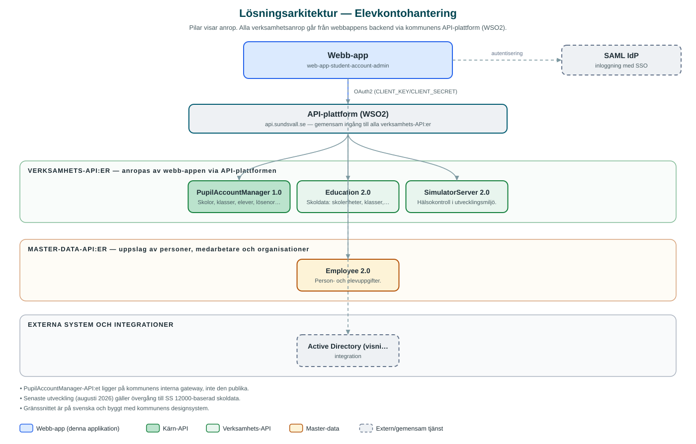

Elevkontohantering
Ett verktyg där skolpersonal hanterar elevkonton – återställer lösenord, aktiverar och inaktiverar konton samt skapar resurskonton per skola och klass.
Om applikationen
Elevkontohantering är ett administrationsverktyg för skolans personal. Genom att välja skola och klass får personalen upp elevernas konton och kan hjälpa elever som exempelvis glömt sitt lösenord, genom att sätta nya lösenord samt aktivera eller inaktivera konton.
Verktyget hanterar även resurskonton kopplade till skolorna, som kan skapas, redigeras och genereras vid behov. Kontouppgifter kan sammanställas till PDF, exempelvis för att dela ut inloggningsuppgifter.
Uppgifter om skolor, klasser och elever hämtas från kommunens skoldatakällor, och åtkomsten begränsas till en behörig administratörsgrupp via kommunens inloggning.
Det här stödjer applikationen
- Sök via skola och klass – Navigera till rätt elever genom att välja skolenhet och klass.
- Lösenordshantering – Sätt nytt lösenord för elever som glömt sina inloggningsuppgifter.
- Aktivera/inaktivera konton – Slå på eller stäng av elevkonton vid behov.
- Resurskonton – Skapa, redigera och generera resurskonton per skola.
- PDF-utskrifter – Generera PDF med kontouppgifter för utdelning.
Teknisk dokumentation
Nedan beskrivs hur applikationen är uppbyggd, vilka API:er den använder och vad som krävs för att driftsätta den. Informationen är härledd ur källkoden och dess konfiguration på GitHub.
Arkitektur

Applikationen består av en webbaserad frontend (Next.js 14, React 18, sk-web-gui) och en backend (Node.js/Express med TypeScript (routing-controllers)) som utvecklas i samma kodbas. Verksamhetsanrop går via kommunens gemensamma API-plattform (WSO2) – frontend pratar aldrig direkt med underliggande system. Inloggning: SAML (SSO) med behörig administratörsgrupp (ADMIN_GROUP). Övriga integrationer som förekommer i koden: WSO2 API-gateway (api.sundsvall.se), Intern API-gateway (api-i-test.sundsvall.se) för PupilAccountManager, SAML IdP, Active Directory (visningsnamn i AD).
Teknikstack
- Frontend: Next.js 14, React 18, sk-web-gui
- Backend: Node.js/Express med TypeScript (routing-controllers)
- Test: Jest, Cypress
API-beroenden
Applikationen konsumerar följande API:er via kommunens API-plattform. Versionerna är hämtade ur källkodens API-konfiguration.
| API | Version | Användning |
|---|---|---|
| PupilAccountManager | 1.0 | Skolor, klasser, elever, lösenord, aktivering/inaktivering och resurskonton. |
| Education | 2.0 | Skoldata: skolenheter, klasser, elevinformation och skolplaceringar. |
| SimulatorServer | 2.0 | Hälsokontroll i utvecklingsmiljö. |
| Employee | 2.0 | Person- och elevuppgifter. |
Konfiguration och driftsättning
- Miljöfiler: frontend/.env, backend/.env.development.local och .env.test.local
- CLIENT_KEY/CLIENT_SECRET för WSO2-prenumerationer
- SAML-certifikat och nycklar samt callback-URL:er
- TypeScript-datakontrakt genereras från API:ernas OpenAPI-specar (yarn generate:contracts)
Noterbart ur källkoden
- PupilAccountManager-API:et ligger på kommunens interna gateway, inte den publika.
- Senaste utveckling (augusti 2026) gäller övergång till SS 12000-baserad skoldata.
- Gränssnittet är på svenska och byggt med kommunens designsystem.
Källkod
Källkoden är öppen och finns hos Sundsvalls kommun på GitHub. I källkodsförrådet finns även instruktioner för att klona, konfigurera och starta applikationen i egen miljö.